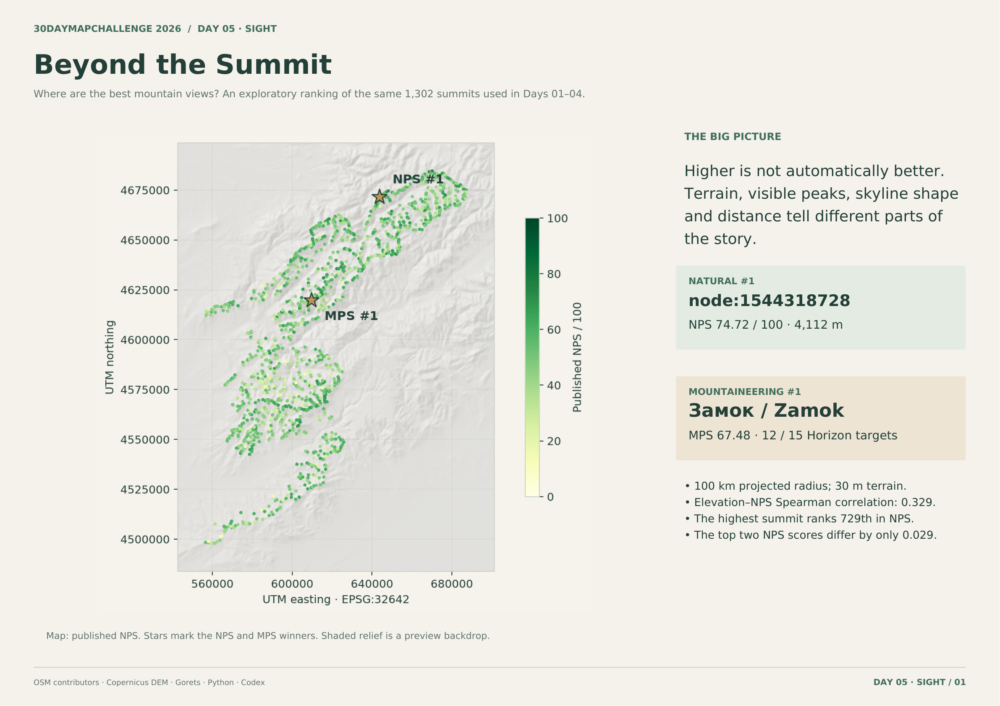
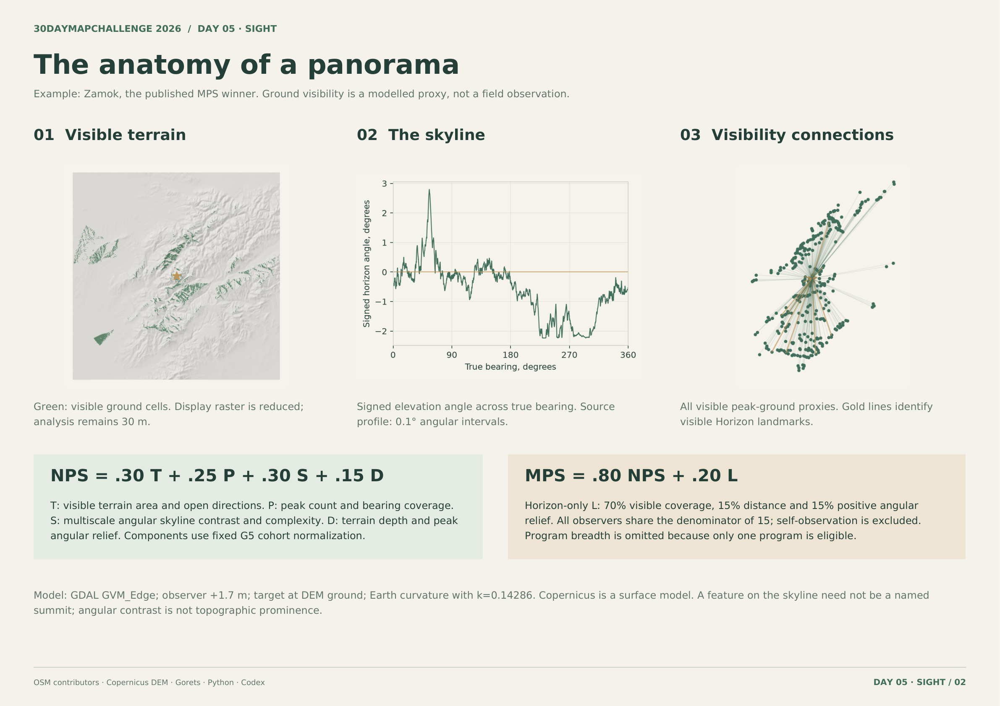
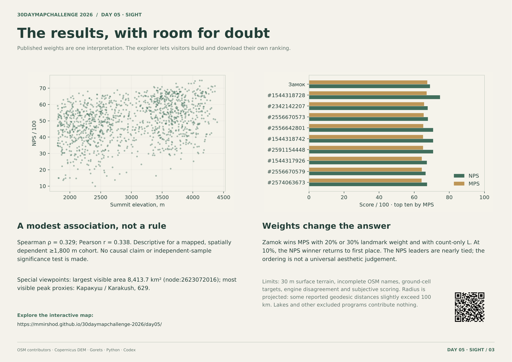

DAY 05 / SIGHT · 30DAYMAPCHALLENGE 2026
За пределами вершины
Где искать лучшие горные панорамы?
1 302наблюдательные вершины
100 кмрадиус анализа
15объектов «Горизонта»
ДАННЫЕ И ПОДХОД
Как устроена работа
Интерактивный атлас 1 302 вершин: видимость рельефа, линия горизонта и собственные веса рейтинга.
- GDAL рассчитывает зоны видимости на 30-метровой модели Copernicus с высотой наблюдателя 1,7 м, кривизной Земли и коэффициентом рефракции 0,14286. Расчётный радиус в проекции — 100 км.
- NPS объединяет рельеф, видимые точки вершин, свойства горизонта и дальность. MPS добавляет видимость 15 объектов программы «Горизонт». Веса можно менять в браузере, сохраняя исходные геометрические расчёты.
- Лидер режима показан постоянно; Top 10 включается отдельно. Выбранная вершина имеет голубое выделение, профиль горизонта, компоненты оценки и доступные линии видимости.
Оригинальный отчёт
3 стр.

